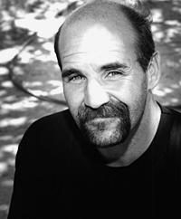

From
the July 22, 1998 Edition
Falsely
Accused
Continued
|  |
| David Abernathie. Photo by Gerald Villadiego. |
The Witnesses Come Clean
Brandi's mother Martha Edwards, her brothers Gary Garrett and Eddy Edwards and maternal grandmother Tillie Phelps all testified that Brandi's story was, in Martha's words, "all a big lie."
Gary told the court that he went along with the story for the sake of his sister Brandi, who wanted to get away from her stepfather. Eddy concurred.
As their mother put it: "...they didn't know that...they would be hurting two men and maybe having them go to prison for the rest of their lives, and he (Gary) thought he'd better tell the truth."
The Verdict
Despite the inconsistencies and contradictions in Brandi's story and despite the fact that the witnesses to Brandi's sexual assault testified under oath that the story was a lie, the jury found David Don Abernathie guilty of two counts of sexual assault.
The Aftermath
Sharon Abernathie was 28 weeks pregnant when her husband's trial began. During the course of the trial, Sharon went into premature labor. The doctors performed a C-section; Sharon almost died. The Abernathie's infant son, however, did not fare as well. After living 15 hours, he died from lung problems at Sunrise Neo-Natal Unit.
"But I got to hold him before he died," says Rebecca Temple, Sharon's mother. "The doctors blamed the loss of the baby on the stress of the trial."
The Sentencing
On Tuesday, June 26, 1990, David Don Abernathie appeared before the Honorable Carl J. Christensen for sentencing. Abernathie appeared with his attorney, Robert Beckett. After Deputy District Attorney Moreo reviewed the evidence from the trial, Judge Christensen asked Abernathie if he wanted to speak.
"Yes, sir, I do," stated Abernathie. "Very briefly, I don't know nothing about the appeal process. However, I would like to for the record state that I do want to appeal this...four of the witnesses, all being family members--the mother, both brothers...the grandmother--testified in my behalf that this sexual assault never did occur. I can't see any reason why they would testify in my behalf...It didn't happen...I am innocent and that's all I can say."
Don David Abernathie was sentenced to spend the rest of his natural days--two consecutive sentences of life imprisonment--in the Nevada Department of Prisons with the possibility of parole.
1990 to 1998
The Prison Years
For eight years, Abernathie spent every moment living out his waking nightmare. When asked about that time, Abernathie is composed.
"I never got any flack when I was in prison because I kept good public relations," says Abernathie. "I worked out all the time. No one messed with me."
Abernathie spent his prison years fighting for the truth of his innocence to be revealed, by appealing his case three times. Each appeal was denied. But he didn't give up hope, despite his belief that the plea bargain his co-defendant Edwards accepted had jeopardized his appeal to the Nevada Supreme Court.
1996
The Recantation
On April 11, 1996, Brandi Garrett recanted. She admitted that she lied about David Abernathie. And she felt guilty. (As it turned out, Frank Edwards was guilty of molesting his stepdaughter, but not in 1988. According to medical reports, Brandi Garrett was raped in 1986, two years before the alleged attack that involved Abernathie. Her symptoms of post-traumatic stress disorder were, in fact, real; however, the story she told about the December 1988 rape was false.)
Brandi had her statement notarized and was examined by a psychologist who evaluated her motivation for recantation; yet Abernathie still wasn't home free. What he needed was a pinch hitter; enter Mace Yampolsky, ready to play hard ball.
"What I don't understand is why it took two years after the alleged victim recanted for David to win his freedom," says local criminal defense attorney Yampolsky. "Why didn't the State dismiss the case?"
1997
The Lie Detector Test
Yampolsky, who took the case pro bono, began by having Abernathie take a lie detector test. On October 17, 1997, Abernathie took a polygraph test at the request of his attorney.
The data was analyzed by three different computerized algorithms; each algorithm evaluated the data to be truthful. The data was also evaluated by traditional methods of polygraphy. The results were the same: David Abernathie was telling the truth.
Eight years earlier, the District Attorney's office threatened Abernathie with a lie detector test. Although he wanted to take the test, Abernathie says the detective never returned his phone calls.
Armed with the results of the lie dector test and the recantation, Yampolsky continued to work on Abernathie's behalf--and in doing so won Abernathie's everlasting gratitude. Having been shuffled around by the criminal justice system, Abernathie was skeptical about attorneys. He didn't trust Yampolsky in the beginning, but he quickly learned that Yampolsky was on top of the case.
"He's a great man," Abernathie says. "He's a fighter."
1998 Catch 22--
Almost Free at Last
Thanks to Yampolsky's efforts on his behalf, the D.A. offered Abernathie a choice:
1) a new trial; or
2) to agree that the D.A.'s office could prove a case against him, should it decide to do so.
It was a tough choice. Disillusioned with the criminal justice system here in Nevada, Abernathie chose not to suffer through another trial and another jury. He chose option number two.
In May 1998--nearly 9 1/2 years after the alleged crime was committed--David Don Abernathie stepped off the prison yard and out from behind the gray razor wire that kept him captive for eight years.
Despite his release, he remains a marked man. Although he is out of prison and happily reunited with his family, Abernathie is still fighting to remove the stigma of convicted sex offender from his record.
Where Are They Now
Frank Edwards served three years; his current whereabouts are unknown.
Brandi Garrett is married and living in California. She has no contact with her mother.
David Abernathie lives in North Las Vegas, with his in-laws, wife Sharon and child David. He is currently seeking employment.
Local writer Nancy Gott teaches a course in ethics for UNLV's Criminal Justice Department.
Last Updated: